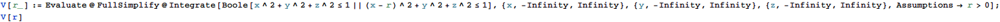

| r>2 | |
| True |
東京大学 2004年 理科 第5問
問題
rを正の実数とする。xyz空間内の原点O(0,0,0)を中心とする半径1の球をA，点P(r,0,0)を中心とする半径1の球をBとする。
球Aと球Bの和集合の体積をVとする。ただし、球Aと球Bの和集合とは、球Aまたは球Bの少なくとも一方に含まれる点全体よりなる立体のことである。
(1) Vをrの関数として表し、そのグラフの概形を描け。
(2) V=8となるとき、rの値はいくらか。四捨五入して小数第一位まで求めよ。
注意：円周率πは、3.14<π<3.15をみたす。
解答
(1)
和集合の体積Vを直接計算する。

| \[Piecewise] |
|
このグラフの形は下図。

(2)
V(r)== 8を解く。


小数第1位で丸める。


補足・感想
(1)でMathematicaの数式処理能力、(2)で数値計算能力を活かせる問題。
(2)は解の精度に関する議論を省くために厳密解を求めてから数値近似したが、最初からFindRootで数値解を求めても良い。